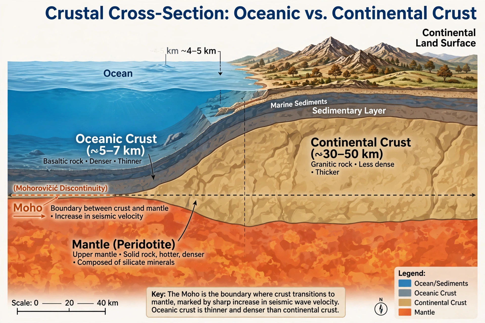

Crust (geology)

Earth's crust is the planet's thin outer shell of solid rock — the surface on which all life lives and from which all minerals and fossil fuels are won. It is chemically distinct from the {L('Mantle_(geology)','mantle')} beneath, from which it is separated by the Mohorovičić discontinuity (Moho).
There are two kinds: thin, dense oceanic crust (typically 5–10 km thick, basaltic, geologically young) and thick, buoyant continental crust (typically 30–50 km, granitic in bulk composition, and in places nearly 4 billion years old).
Properties and formation
Oceanic crust is created continuously at {L('Mid-ocean_ridge','mid-ocean ridges')} and destroyed at {L('Subduction','subduction zones')}, so none is very old. Continental crust is much harder to destroy; it grows by accretion of volcanic arcs and terranes, and preserves the record of most of Earth history in its rocks.
Together with the rigid uppermost mantle, the crust forms the lithosphere, whose plates carry the continents and oceans. Despite being the only layer directly accessible (the deepest borehole, Russia's Kola well, reached about 12.3 kilometres), the crust hosts the full machinery of the rock cycle: igneous, sedimentary and metamorphic rocks constantly transformed by tectonics, weathering and erosion.
Resources
Humanity extracts its metals, building materials, groundwater and fossil fuels from the crust, and disposes of its waste into it; understanding its fractures, fluids and stresses underlies mining, tunnelling, geothermal energy and carbon storage alike. See Geology and Rock (geology).
See also: Mantle (geology) · Plate tectonics · Geology · Rock (geology) · Mid-ocean ridge